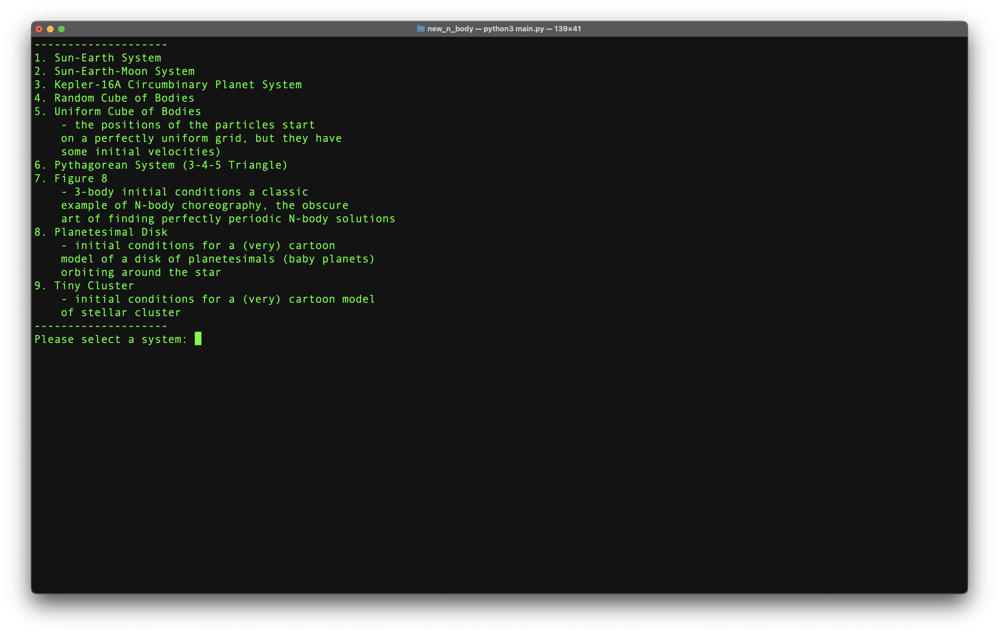

Imagine a whole bunch of stuff (preferably coalesced into bodies like stars or planets) out there in space. Anywhere, anytime. Just, imagine. What are those things doing? Are they still? Spinning? Moving towards or away from one another? If only we could look at it for ourselves... But wait, we can! - and this tool (or toy?) can help.
This N-Body Simulation started its life as my final project for CU Boulder's ASTR 2600: Introduction to Scientific Programming, but back then I didn't know what I was doing or how to do it, at least as far as useful programs go. So I decided to give that old IPython notebook a facelift and turn it into something others could experience and (hopefully) learn from.
Ugh. If any part of this program will stop people from enjoying it, it's the installation. Hopefully someday in the future, this will
exist as an app instead of a series of scripts and modules that exist separately. For now, provided you have
access to a Unix-like command line, you can run pip3 install -r requirements.txt. You'll also
have to install ffmpeg, a multimedia framework.
Once you have everything installed, you can finally run the program with
python3 main.py. This will start the command line interface (or CLI, once you get to know it
better).
After you get through all that info (still trying to decide if it's worth it to keep all that there...) you are taken to the meat of the app: a menu detailing the available systems for you to screw around with.
Here is the first and most basic of the simulations: it's just the Sun and the Earth! And because I haven't coded in any sort of friction or otherwise resistive forces, nothing is changing! There is one issue though - the Sun should be the same color (based on distance from (0,0,0)) in the scatter plots and the kinetic energy line plot, but it isn't! Feel free to fix it if you know how ;)
You really can't even tell the Moon is there, and that's because it's inside the Earth. No, really! The dots are scaled by mass, but I set an absolute minimum size so that all particle/bodies would be visible from the outset. This fact, combined with the (literal) astronomical scales in the Sun-Earth-Moon system put the Moon inside of the Earth in the plot.
From Wikipedia, "Kepler-16 is an eclipsing binary star system in the constellation of Cygnus that was targeted by the Kepler spacecraft. Both stars are smaller than the Sun; the primary, Kepler-16A, is a K-type main-sequence star and the secondary, Kepler-16B, is an M-type red dwarf. They are separated by 0.22 AU, and complete an orbit around a common center of mass every 41 days."
I think the interesting feature illustrated by this simulation is that all three bodies seem to be orbiting nothing! Of course, this is not the case - they are orbiting the barycenter, the center of mass of the three bodies. Specifically, notice the planet (small yellow outer dot) that is orbiting in a perfect circle around this point - almost un-perturbed by the stars! Its kinetic energy is staying constant (and low, relative to the stars, due to its extremely small mass) throughout this orbit.
FInally, notice that the stars are in a pattern of falling towards each other and then falling past each other, speeding them up and slowing them down together. This is illustrated in the kinetic energy plot as both oscillate simultaneously.
This simulation is the first example of things that can go terribly wrong in numerical computation. Almost immediately, two of the bodies in the cube collide (more or less, i.e., they fling past each other), sending them off into space at exceptionally high velocities. This isn't entirely unphysical, but what we're seeing here is the force of gravity going through the roof (remember, gravitation force is inversely proportional the the square of separation - this means that when objects get very close, gravity gets very large). The "course" timestep of the simulation (0.5 days) allowed for the close approach and slingshot phenomenon, but in the next step the objects were already so far separated that they weren't going to be slowed down by gravity (again, at large distances gravity gets very small). This is what resulted in the apparent creation of energy (and lots of it), as well as the system becoming almost unobservable as those two bodies get further and further away from the center of the system.
I think this is a good time to acknowledge the work of a close friend of mine who has contributed some amazing work to this project. First, he coded the "perspective" effect where the particles get smaller as the bounds increase to keep everything in frame - a much better visualization than I initially had. Also, he wrote a version of the calculations that use adaptive time steps, a way to reduce these non-physical phenomena. I haven't included this improvement quite yet, as there are still some kinks to iron out. Either way, his work has helped to elevate this project to the next level, and I am thankful that he has decided to lend me some of his genius on all of this.
Here we see another slingshot phenomenon, something that could be fixed by an adaptive time step process as mentioned above, or by simply using smaller constant time steps. In the video below, I used a time step of 0.5 days.
Now let's use a finer time step and see how the result change (and since this system isn't randomly generated, the results are a true testament to the power - and shortcomings - of numerical integration).
I absolutely love how this one shows the slingshotting with more-or-less correct "deceleration" afterwards. The simulation starts with all three particles accelerating towards each other, then we see the two close encounters fling the particles off into space, and finally we see everything get pulled back gravitationally, slowing everything down appropriately. It almost appears as if the particles will fall back towards each other, but alas. They have successfully escaped each other's gravity. Beautiful!
A classic example of N-body choreography, the obscure art of finding perfectly periodic N-body solutions.
Everyone's favorite. There are lots of things to talk about here! First, I used the default parameters to simulate a planetesimal disk with 30 bodies over the course of a year (with a timestep of 0.5 days). The particles have a small but noticeable z-velocity - this is what causes the disk to not be perfectly flat.
Notice that the star in the middle has a small and constant kinetic energy; while it is ultra-massive, it's also barely moving and thus has almost no KE. Then, the outer-most planets have the next smallest KE, which makes sense because they moe the slowest (as described by Kepler's second law). As we look at particles closer to the host star, we see increasing kinetic energies (which is proportional to the square of a body's velocity).
I should mention that in this first simulation, the mass of the planets is around one ten-billionth that of the host star, so the star's gravity is completely dominating the system. At a mass ratio of above around one millionth, we see the planets' gravity begin to have more noticeable effects, as shown in the second video below.
The exact same initial conditions except that planets are now only one one-thousandth the mass of the host star (this is ten million times more massive as in the video above). Notice how much more chaotic this system is - plants are swapping places left and right and a few even get ejected from the system entirely!
Finally, let's see what happens when we increase that z-velocity by a factor of ten from the previous two simulations.
Perhaps intuitively, all of the planets start with a higher KE than before (because they have a significantly higher initial velocity!). We see two planets migrate outwards and slow down as they are tugged on by the gravity of the host star. The others seem to continue doing their thing as time goes on. Amazing!